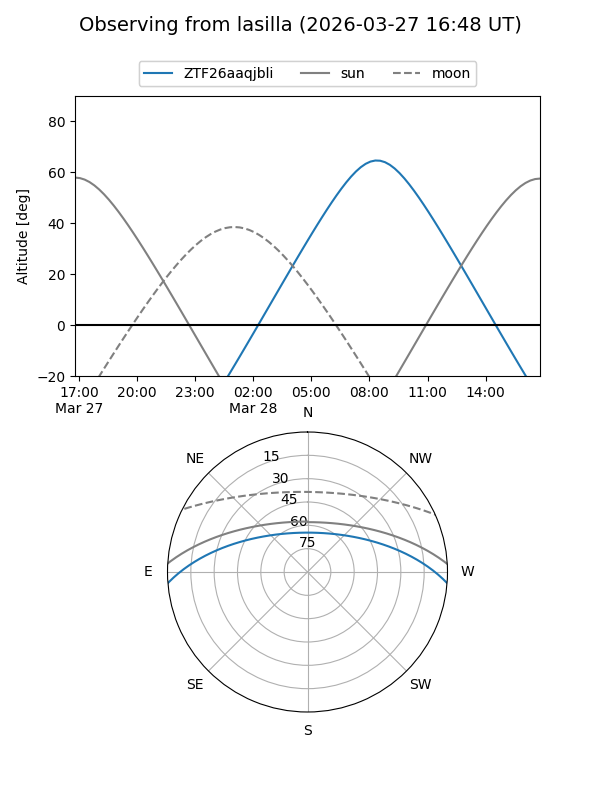
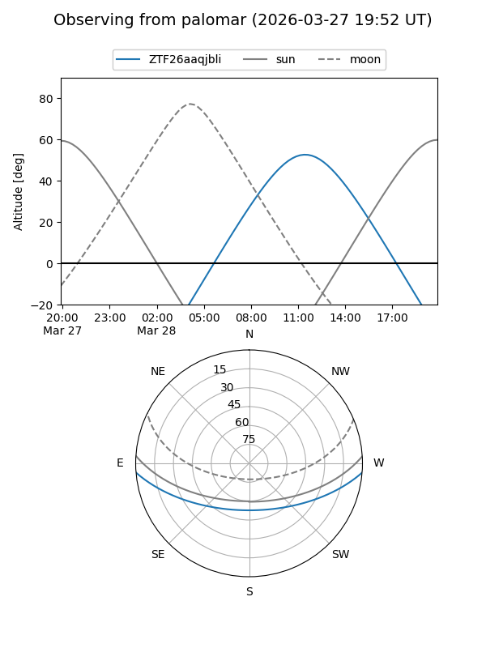

ZTF26aaqjbli
Target ZTF26aaqjbli at 2026-03-27 13:25
Aliases and brokers:
FINK: link
Lasair: link
ALeRCE: link
alt names
ZTF26aaqjbli (ztf,fink_ztf)
Coordinates:
equatorial (ra, dec) = 240.4655,-3.86515
equatorial (HMS+DMS) = 16:01:51.73,-03:51:54.56
galactic (l, b) = (6.4724,+34.60737)
Flags:
Photometry:
last ztfg=17.87
1 ztfg detections
Lightcurve
Visibility


Additional plots